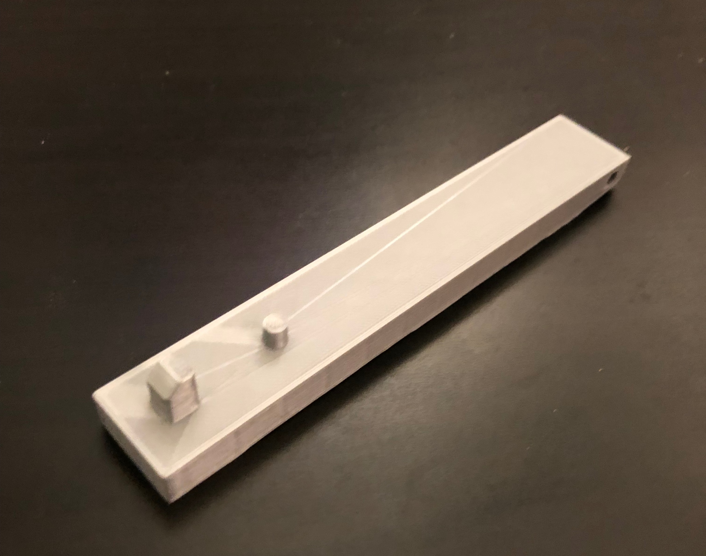

Mini Mini Arduino Keyboard
Teaching Basic Music Ideas
The aim of this project is to create a single octave midi keyboard which can be used as a tool to teach very basic musical concepts. This page will document the progress that is made as my team continues working on the keyboard.
February 2nd, 2018
3D Printing and Designing a Piano Key
Now that the circuit is finished, it is time to actually start constructing the piano! Our first print of the key looks like this:
The first pin is where the key will touch down on the copper tape to complete the circuit, and the second pin will be where the spring rests to control the action of the key. The hole in the back will be used as the pivoting mechanism for the key to move down. But, after printing this key, we already had some different design ideas. First, we will shorten the key to cut down on print time and the amount of materials used. Second, we plan on switching the spring pin and the touch pin to allow for more leverage on the spring and more room for the circuit to operate.
February 1st, 2018
Designing the Piano Circuit
The main idea of this circuit is to think of each individual piano key as a button. When the button is pressed, it will complete the circuit at the assigned node on the arduino, and output the frequency mapped to that specific key. We also wanted to implement a button that would shift the frequency up an octave when it is pressed. This video shows the first iteration of the piano and octave switcher in action.